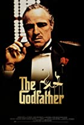
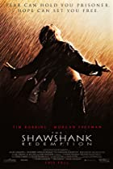
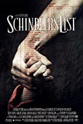
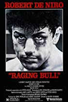
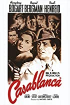

★ 9.2
Godfather "Don" Vito Corleone is the head of the Corleone mafia family in New York. He is at the event of his daughter's wedding. Michael, Vito's youngest son and a decorated WW II Marine is also present at the wedding. Michael seems to be uninterested in being a part of the family business. Vito is a powerful man, and is kind to all those who give him respect but is ruthless against those who do not. But when a powerful and treacherous rival wants to sell drugs and needs the Don's influence for the same, Vito refuses to do it. What follows is a clash between Vito's fading old values and the new ways which may cause Michael to do the thing he was most reluctant in doing and wage a mob war against all the other mafia families which could tear the Corleone family apart.

★ 9.3
Bank Merchant Andy Dufresne is convicted of the murder of his wife and her lover, and sentenced to life imprisonment at Shawshank prison. Life seems to have taken a turn for the worse, but fortunately Andy befriends some of the other inmates, in particular a character known only as Red. Over time Andy finds ways to live out life with relative ease as one can in a prison, leaving a message for all that while the body may be locked away in a cell, the spirit can never be truly imprisoned.

★ 9.0
Businessman Oskar Schindler (Liam Neeson) arrives in Krakow in 1939, ready to make his fortune from World War II, which has just started. After joining the Nazi party primarily for political expediency, he staffs his factory with Jewish workers for similarly pragmatic reasons. When the SS begins exterminating Jews in the Krakow ghetto, Schindler arranges to have his workers protected to keep his factory in operation, but soon realizes that in so doing, he is also saving innocent lives.

★ 8.2
The life of Bronx-based Jake LaMotta during his professional middleweight boxing career from 1941 to the mid-1950s, and his immediate post-boxing life is dramatized. Managed for most of his boxing career by his brother Joey LaMotta, Jake has the goal not only of getting the title fight at almost any cost - the one thing he unwilling to do to demonstrate that he is the best and in his "my way or the high way" mentality is to be knocked out, even if it is for a longer term benefit - but also to have the most fame possible, which means the improbable fantasy of becoming a heavyweight. While not managed by them, much of his career is affected by his and Joey's mafia connections.

★ 8.5
The story of Rick Blaine, a cynical world-weary ex-patriate who runs a nightclub in Casablanca, Morocco during the early stages of WWII. Despite the pressure he constantly receives from the local authorities, Rick's cafe has become a kind of haven for refugees seeking to obtain illicit letters that will help them escape to America. But when Ilsa, a former lover of Rick's, and her husband, show up to his cafe one day, Rick faces a tough challenge which will bring up unforeseen complications, heartbreak and ultimately an excruciating decision to make.